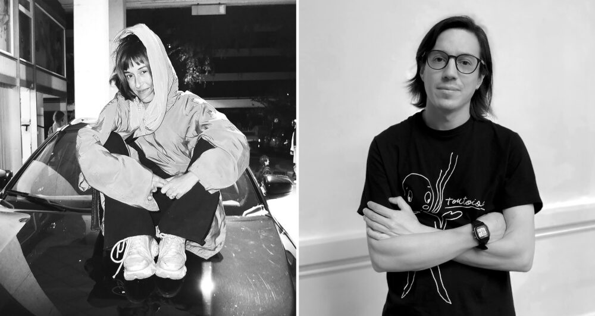

【 Territórios Reimaginados: Reclaim Regional 】
Artist residency and exhibition with Ciel Baumgartner Vizkelety at DOCK Basel, from August 28 to September 18, 2026, as part of Kunsttage Basel. Basel, Switzerland.

DOCK's shop window during the residency
Residency and exhibition project in collaboration between DOCK and MAVI UC (Museum of Visual Arts, Santiago, Chile), linked to the MAVI UC Young Artists' Prize.
Co-created with Ciel Baumgartner Vizkelety
Thanks to Carolina Brunelli and Rodrigo Toro
Opening: Thursday, August 27, 7 PM
Round table "Artist Residency Decolonial", with Vandria Borari and Carolina Brunelli: Friday, August 28, 7 PM
Artist talk: Saturday, August 29, 4 PM
DOCK, Klybeckstrasse 29, Basel


Ciel Baumgartner Vizkelety and Matías Serrano Acevedo. Photo: DOCK

About the residency
The art project «Territórios Reimaginados: Reclaim Regional» emerged from a collaboration between DOCK and the Museo de Artes Visuales MAVI UC. It explores questions of belonging, visibility and cultural diversity, and questions colonial structures in artist residencies and in migration processes. These colonial continuities often show up subtly in everyday life, for example through language barriers or exclusionary social codes. In both Switzerland and Chile, despite real and deeply rooted migration movements, stereotyped discourses and historical power structures often shape the image of an idealised national identity. The project uses art as a transnational practice to break up rigid geographical categories and to redefine the regional through migration and global networks.
During the residency in Basel, Swiss artist Ciel Baumgartner Vizkelety and Chilean artist Matías Serrano Acevedo worked together on a shared artistic research process, using DOCK as a studio and a platform for exchange. The results were presented in a duo exhibition during Kunsttage Basel, together with a round table and an artist talk on the process.

Exhibition text, co-written with Ciel Baumgartner Vizkelety
Basel is a city where lines converge, where trajectories cross. This entanglement is reflected in its multiple languages. I don't know whether there is a single dictionary, a strictly local tongue enclosed by the borders. During my stay here, I have found at least German, French, Italian, Spanish, Portuguese, Greek, Hungarian, and above all (multiple) broken English. But these languages also break and fuse into one another, among the dialects that fracture formality with the liveliness of the street.
The lines from which words emerge do not originate there either. Words seek to refer to what appears: an object, a sensation, a person, or whatever calls on us to be named. We propose to throw words into the world, hoping they will build sense there, within the entanglement of language and appearances. In this exhibition, we invite you to do the same.
Moving through the city, we have noticed the particular relationship it holds with objects across all their lives — or across all the lines that set them in motion. Passing by the strict administration of waste, or the search for further lives for each object at the Brockis, one senses a clinging of language to things, trying to hold them in circulation through the categories into which they are sorted.
We can think of lines as what sets objects circulating: what they trace as they draw near to our attention, what produces a place for us as its atmosphere envelops us, what we throw out with words, hoping for their encounter within sense. The works we present are presences — not representations — of these lines: ephemeral assemblages that play with magnetic, electric, elastic, sonic, aeolian, and gravitational lines.
Some cyclical, others arrhythmic, all of them make evident the mere appearance of small machinic gestures, still lacking meaning, waiting for a line of language to be cast toward them so that it may begin shaping new entanglements — entanglements that converge into future lines, into public language and the exchange between tongues and ears.
In the exhibition, we find ourselves among obsolete toys, a house-archive that seems to be watching, objects that become creatures, and humans who become systems or machines. This blurring shows how our relationship with the living world is shaped by neoliberalism: a utilitarian, destructive relationship to the world and to life, producing a sense of powerlessness. We no longer know where or how to look, or how to function. It is a system that is both precarious and resilient, difficult to dismantle.
The everyday materials we collected during the residency are assembled, set in motion, repaired, dispaired. This echoes the idea of “hechizo,” or spell, a word that in Chile describes a way of repairing and transforming things. Giving attention to a broken object does not simply mean restoring its function; it also means restoring our relationship to it, and therefore to the world. Repair thus becomes a way of reenchanting the world and of making that relation visible.
The reappropriation of public space and the creation of new connections and new stories also contribute to this reenchantment. This takes place through gestures of care, which can also become gestures of destruction or disruption. What we are therefore seeking is a tension, a balance that can hold contradictions and complexity. From care to disruption, the exhibition keeps these relations in motion.
Finally, it is about breaking the rhythm. What connects the works is a multiple, polyphonic, and asynchronous rhythm that becomes sound and movement. Faced with a linear and functional system that imposes a precise narrative and cadence, bodies are oriented to follow a predetermined rhythm. Being out of rhythm, being out of sync, thus becomes a form of resistance.


Photo: DOCK Kunstraum Archiv und Ausleihe

Photo: DOCK Kunstraum Archiv und Ausleihe
Drawings
Drawings of the works, accompanied by lines of cut-out words.


Process

Photo: DOCK

Photo: DOCK


Opening and artist talk

Photo: DOCK Kunstraum Archiv und Ausleihe

Photo: DOCK Kunstraum Archiv und Ausleihe

Photo: DOCK Kunstraum Archiv und Ausleihe

Photo: DOCK Kunstraum Archiv und Ausleihe
External links
- Press note on the Faculty of Arts, U. de Chile website (in Spanish): Artistas formados en la Universidad de Chile destacan en residencias de investigación medial
- Videos on MAVI's Instagram (in Spanish): reel 1 and reel 2
- Exhibition page at DOCK Basel
- Video documentation on Vimeo
- Repositories linked to the research:
weird-seltsam-extrano: a translator that turns a sentence into a tangle of languages
code-switching-poetry: a machine for printing on magnetic sheets to make fridge poetry kits with words in several languages, and an HTML poem generator